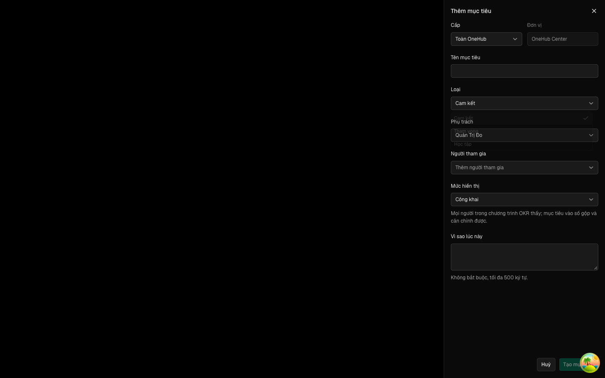
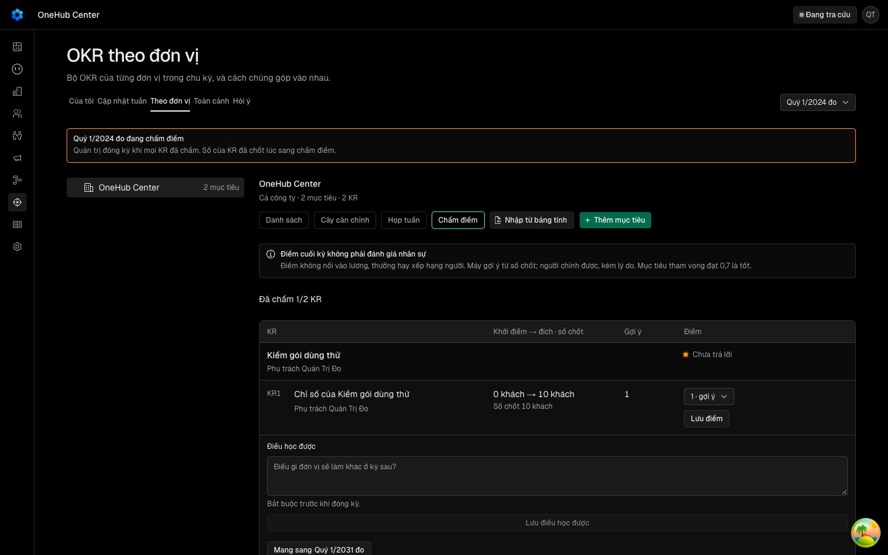
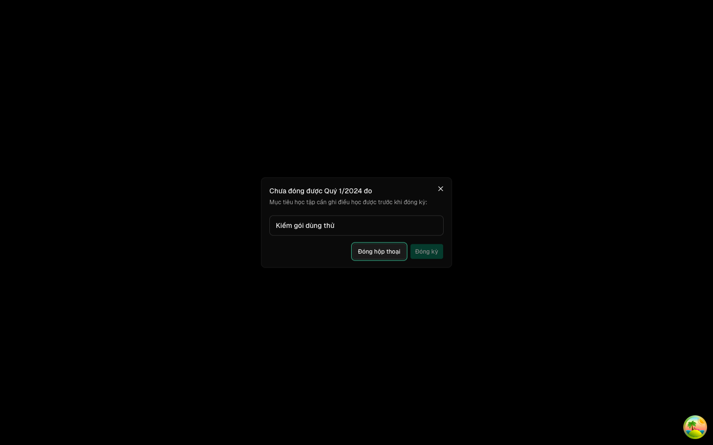
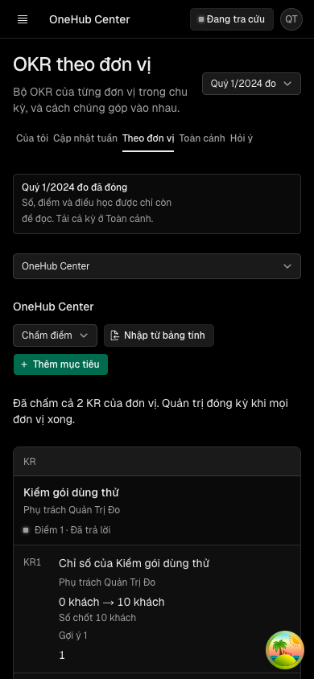
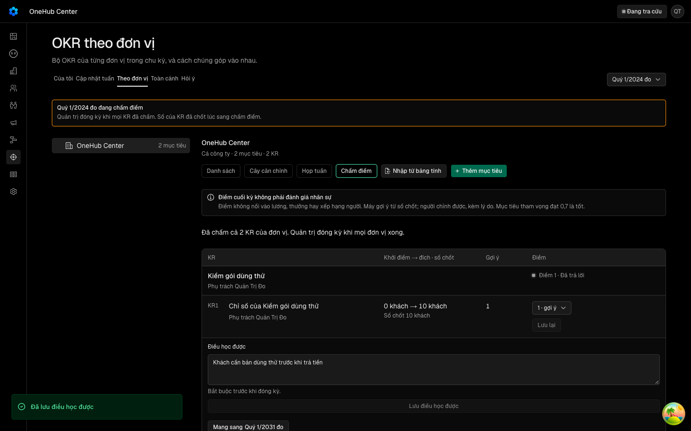

Loại mục tiêu thứ ba «Học tập» cho OKR
Các eval
| Eval | Tiêu chí | Loại | Verdict | run_id | verified_at |
|---|---|---|---|---|---|
| E1 | AC-1 | test | PASS | minted-okr-loai-hoc-tap-E1-r1 | 2026-10-07T14:48:08Z |
| E2 | AC-1 | test | PASS | minted-okr-loai-hoc-tap-E2-r1 | 2026-10-07T14:48:08Z |
| E3 | AC-2 | test | PASS | minted-okr-loai-hoc-tap-E3-r1 | 2026-10-07T14:48:08Z |
| E4 | AC-3 | test | PASS | minted-okr-loai-hoc-tap-E4-r1 | 2026-10-07T14:48:08Z |
| E5 | AC-3 | test | PASS | minted-okr-loai-hoc-tap-E5-r1 | 2026-10-07T14:48:08Z |
| E6 | AC-4 | test | PASS | minted-okr-loai-hoc-tap-E6-r1 | 2026-10-07T14:48:08Z |
| E7 | AC-5 | test | PASS | minted-okr-loai-hoc-tap-E7-r1 | 2026-10-07T14:48:08Z |
| E8 | AC-6 | test | PASS | minted-okr-loai-hoc-tap-E8-r1 | 2026-10-07T14:48:08Z |
| E9 | AC-7 | test | PASS | minted-okr-loai-hoc-tap-E9-r1 | 2026-10-07T14:48:08Z |
| E10 | AC-8 | test | PASS | minted-okr-loai-hoc-tap-E10-r1 | 2026-10-07T14:48:08Z |
| E11 | AC-8 | ui-check | PASS | E11-2026-10-07-run2 | 2026-10-07T14:48:08Z |
| E12 | AC-4 | ui-check | PASS | minted-okr-loai-hoc-tap-E12-r1 | 2026-10-07T14:48:08Z |
| E13 | AC-7 | ui-check | PASS | E13-2026-10-07-run2 | 2026-10-07T14:48:08Z |
| E14 | AC-9 | judgment | PASS (JUDGE ĐỀ XUẤT, CHỜ NGƯỜI) | — | — |
| E15 | AC-9 | test | PASS | minted-okr-loai-hoc-tap-E15-r1 | 2026-10-07T14:48:08Z |
| E16 | AC-4 | script | PASS | minted-okr-loai-hoc-tap-E16-r1 | 2026-10-07T14:48:08Z |
| E17 | AC-7 | script | PASS | minted-okr-loai-hoc-tap-E17-r1 | 2026-10-07T14:48:08Z |
| E18 | AC-7 | test | PASS | minted-okr-loai-hoc-tap-E18-r1 | 2026-10-07T14:48:08Z |
Chi tiết từng eval
PASS E1 · test
AC-1: Given ba loại mục tiêu, When đọc danh sách loại ở mọi nơi kho dùng — `LOAI_MUC_TIEU`, `LOAI_MUC_TIEU_NHAP` của soạn OKR, enum `loaiMucTieu` của hợp đồng API — Then cả ba là cùng tập `{cam-ket, tham-vong, hoc-tap}`; And `okr.createObjective` với `kind: "hoc-tap"` lưu được và `okr.objective` đọc lại `kind: "hoc-tap"`.
carry-forward tu round 1 — delta khong cham paths cua eval
PASS E2 · test
AC-1: Given ba loại mục tiêu, When đọc danh sách loại ở mọi nơi kho dùng — `LOAI_MUC_TIEU`, `LOAI_MUC_TIEU_NHAP` của soạn OKR, enum `loaiMucTieu` của hợp đồng API — Then cả ba là cùng tập `{cam-ket, tham-vong, hoc-tap}`; And `okr.createObjective` với `kind: "hoc-tap"` lưu được và `okr.objective` đọc lại `kind: "hoc-tap"`.
carry-forward tu round 1 — delta khong cham paths cua eval
PASS E3 · test
AC-2: Given một mục tiêu học tập có vạch kỳ vọng, When máy đọc tình trạng giữa kỳ ở các mức tỉ lệ tiến độ/kỳ vọng 0 · 0,49 · 0,5 · 0,69 · 0,7 · 0,85 · 1, Then kết quả giống hệt mục tiêu tham vọng ở cùng mức (Chậm nhịp dưới 0,7, Đúng nhịp từ 0,7) và không mức nào ra «Trượt»; And mục tiêu cam kết ở cùng các mức vẫn đọc như hôm nay.
carry-forward tu round 1 — delta khong cham paths cua eval
PASS E4 · test
AC-3: Given một mục tiêu học tập ở pha Chấm điểm, When bảng chấm (`okr.bangCham`) được đọc trước và sau khi ghi «Điều học được», Then cách đọc của nó là «Chưa trả lời» rồi «Đã trả lời», kể cả khi KR của nó chưa có điểm; And điều học được chỉ có khoảng trắng vẫn là «Chưa trả lời»; And mục tiêu cam kết, tham vọng giữ cách đọc theo điểm như hôm nay.
carry-forward tu round 1 — delta khong cham paths cua eval
PASS E5 · test
AC-3: Given một mục tiêu học tập ở pha Chấm điểm, When bảng chấm (`okr.bangCham`) được đọc trước và sau khi ghi «Điều học được», Then cách đọc của nó là «Chưa trả lời» rồi «Đã trả lời», kể cả khi KR của nó chưa có điểm; And điều học được chỉ có khoảng trắng vẫn là «Chưa trả lời»; And mục tiêu cam kết, tham vọng giữ cách đọc theo điểm như hôm nay.
carry-forward tu round 1 — delta khong cham paths cua eval
PASS E6 · test
AC-4: Given chu kỳ ở pha Chấm điểm, mọi KR đã chấm, và một mục tiêu học tập đã công bố chưa ghi điều học được, When quản trị chuyển chu kỳ sang «Đã đóng», Then API từ chối với thông điệp nêu số mục tiêu và tên của nó, chu kỳ giữ pha Chấm điểm; And khi đã ghi điều học được thì chuyển được. (cross-layer)
carry-forward tu round 1 — delta khong cham paths cua eval
PASS E7 · test
AC-5: Given bốn chu kỳ, mỗi chu kỳ một mục tiêu học tập chưa ghi điều học được ở một trạng thái — nháp · chờ duyệt · công bố · đã bỏ — và mọi KR của mục tiêu đã công bố đã chấm, When chuyển từng chu kỳ sang «Đã đóng», Then chỉ chu kỳ có mục tiêu học tập đã công bố bị chặn; ba chu kỳ kia chuyển được.
carry-forward tu round 1 — delta khong cham paths cua eval
PASS E8 · test
AC-6: Given hộp khép kỳ ở Cài đặt › OKR mở cho chu kỳ có mục tiêu học tập chưa ghi điều học được (mọi KR đã chấm), When hộp tải xong, Then nó là hộp chặn (không có nút khép) liệt kê tên từng mục tiêu học tập chưa ghi, tên đánh dấu để trình duyệt không tự dịch; And khi không còn mục tiêu nào như vậy thì hộp là hộp xác nhận như hôm nay.
carry-forward tu round 1 — delta khong cham paths cua eval
PASS E9 · test
AC-7: Given màn chấm điểm có một mục tiêu học tập mà KR của nó chưa có điểm, When người ghi điều học được và bấm lưu, Then — không tải lại trang — nhãn cách đọc đổi từ «Chưa trả lời» sang «Đã trả lời», và trước đó dưới ô điều học được có chú thích «Bắt buộc trước khi đóng kỳ»; And mở hộp khép kỳ ngay sau đó (bằng bấm, không tải lại) không còn liệt kê mục tiêu này; And mục tiêu cam kết không có chú thích đó. (cross-layer)
carry-forward tu round 1 — delta khong cham paths cua eval
PASS E10 · test
AC-8: Given hộp thoại thêm/sửa mục tiêu, When mở hộp chọn «Loại», Then có đúng ba lựa chọn «Cam kết», «Tham vọng», «Học tập» (tiếng Anh: «Committed», «Aspirational», «Learning»); And chọn «Học tập» rồi lưu thì mục tiêu hiện chip «Học tập». (cross-layer)
carry-forward tu round 1 — delta khong cham paths cua eval
PASS E11 · ui-check
AC-8: Given hộp thoại thêm/sửa mục tiêu, When mở hộp chọn «Loại», Then có đúng ba lựa chọn «Cam kết», «Tham vọng», «Học tập» (tiếng Anh: «Committed», «Aspirational», «Learning»); And chọn «Học tập» rồi lưu thì mục tiêu hiện chip «Học tập». (cross-layer)





carry-forward tu round 1 — delta khong cham paths cua eval (khung anh goc xem round 1 trong Iterations)
PASS E12 · ui-check
AC-4: Given chu kỳ ở pha Chấm điểm, mọi KR đã chấm, và một mục tiêu học tập đã công bố chưa ghi điều học được, When quản trị chuyển chu kỳ sang «Đã đóng», Then API từ chối với thông điệp nêu số mục tiêu và tên của nó, chu kỳ giữ pha Chấm điểm; And khi đã ghi điều học được thì chuyển được. (cross-layer)


carry-forward tu round 1 — delta khong cham paths cua eval (khung anh goc xem round 1 trong Iterations)
PASS E13 · ui-check
AC-7: Given màn chấm điểm có một mục tiêu học tập mà KR của nó chưa có điểm, When người ghi điều học được và bấm lưu, Then — không tải lại trang — nhãn cách đọc đổi từ «Chưa trả lời» sang «Đã trả lời», và trước đó dưới ô điều học được có chú thích «Bắt buộc trước khi đóng kỳ»; And mở hộp khép kỳ ngay sau đó (bằng bấm, không tải lại) không còn liệt kê mục tiêu này; And mục tiêu cam kết không có chú thích đó. (cross-layer)


carry-forward tu round 1 — delta khong cham paths cua eval (khung anh goc xem round 1 trong Iterations)
PASS (JUDGE ĐỀ XUẤT, CHỜ NGƯỜI) E14 · judgment
AC-9: Given lời dặn của Kara khi soạn OKR, When đọc mục nói về loại mục tiêu, Then nó cho phép `hoc-tap` và nói rõ khi nào dùng (mục tiêu kiểm một giả thuyết chưa biết đáp án), không mâu thuẫn với cách đọc «không bao giờ Trượt» và luật bắt buộc ghi điều học được; And lược đồ đầu ra của soạn OKR nhận `loaiMucTieu: "hoc-tap"`.
PASS E15 · test
AC-9: Given lời dặn của Kara khi soạn OKR, When đọc mục nói về loại mục tiêu, Then nó cho phép `hoc-tap` và nói rõ khi nào dùng (mục tiêu kiểm một giả thuyết chưa biết đáp án), không mâu thuẫn với cách đọc «không bao giờ Trượt» và luật bắt buộc ghi điều học được; And lược đồ đầu ra của soạn OKR nhận `loaiMucTieu: "hoc-tap"`.
carry-forward tu round 1 — delta khong cham paths cua eval
PASS E16 · script
AC-4: Given chu kỳ ở pha Chấm điểm, mọi KR đã chấm, và một mục tiêu học tập đã công bố chưa ghi điều học được, When quản trị chuyển chu kỳ sang «Đã đóng», Then API từ chối với thông điệp nêu số mục tiêu và tên của nó, chu kỳ giữ pha Chấm điểm; And khi đã ghi điều học được thì chuyển được. (cross-layer)
carry-forward tu round 1 — delta khong cham paths cua eval
PASS E17 · script
AC-7: Given màn chấm điểm có một mục tiêu học tập mà KR của nó chưa có điểm, When người ghi điều học được và bấm lưu, Then — không tải lại trang — nhãn cách đọc đổi từ «Chưa trả lời» sang «Đã trả lời», và trước đó dưới ô điều học được có chú thích «Bắt buộc trước khi đóng kỳ»; And mở hộp khép kỳ ngay sau đó (bằng bấm, không tải lại) không còn liệt kê mục tiêu này; And mục tiêu cam kết không có chú thích đó. (cross-layer)
carry-forward tu round 1 — delta khong cham paths cua eval
PASS E18 · test
AC-7: Given màn chấm điểm có một mục tiêu học tập mà KR của nó chưa có điểm, When người ghi điều học được và bấm lưu, Then — không tải lại trang — nhãn cách đọc đổi từ «Chưa trả lời» sang «Đã trả lời», và trước đó dưới ô điều học được có chú thích «Bắt buộc trước khi đóng kỳ»; And mở hộp khép kỳ ngay sau đó (bằng bấm, không tải lại) không còn liệt kê mục tiêu này; And mục tiêu cam kết không có chú thích đó. (cross-layer)
carry-forward tu round 1 — delta khong cham paths cua eval
Eval không phân biệt (Analyst)
Vòng verify
- Round 1: không eval nào đỏ; lệnh suite `agent-okr` (cùng các gói env, ai-okr, telemetry, validation) đỏ một ca «cỡ lời dặn không vượt trần ký tự» và không gắn eval. Trả về implementation để xác minh nguyên nhân và vá hoặc chứng minh ca đó đỏ từ trước.
- Round 2: S4 r1 vá lời dặn Kara dưới trần ký tự (commit 7671f054f). Cả bảy lệnh suite xanh; không eval tính năng nào bị delta chạm vào paths nên mang sang từ round 1. Verdict PASS, chờ người ký ở Cổng 2.